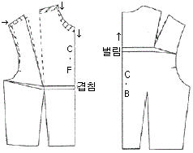
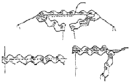

패션머천다이징산업기사 (2012-08-26 기출문제)
1과목: 패션마케팅
1. 패션 머천다이저의 역할로서 가장 거리가 먼 것은?
- 디자인
- 상품기획
- 정보분석
- 판매원
(정답률: 알수없음)

2. 기업의 제품 가격결정방법에 대한 설명이 틀린 것은?
- 경쟁제품중심의 가격결정방법-경쟁상품의 가격을 근거로 하여 자사제품의 가격을 경쟁사보다 높게 결정하는 경우는 시장점유율을 높이기 위해 사용되는 방법이다.
- 가치 중심의 가격결정방법-표적소비자들이 자사제품에 대해 어느 정도의 가치를 부여하는지를 조사하여 이에 상응하는 제품가격을 목표가격으로 설정한 다음 제품디자인 및 생산원가를 계획하는 방법이다.
- 원가가산 가격결정방법-단위당 원가에 일정률의 마진을 더해 판매가를 결정하는 방법이다.
- 목표이익 가격결정방법-목표이익을 실현하는 매출 수준에서 제품가격을 결정하는 방법이다.
(정답률: 알수없음)
3. 패션 할인점의 유형 중 박리다매(薄利多賣)를 원칙으로 유명상표를 지가(地價) 및 임대료가 싼 지역에서, 셀프 서비스하의 낮은 가격으로 판매 하는 곳은?
- 디스카운트 스토어
- 상설할인매장
- 아울렛 스토어
- 전문할인점
(정답률: 알수없음)
4. 다음 중 패션머천다이저의 역할은?
- 불특정한 다수의 소비자들에게 그들이 입기를 원하는 디자인을 제공해 줌으로써 미적인 만족을 주는 역할
- 생산자에게 소비자의 욕구와 동향을 전하고 소비자에게는 패션정보를 제공하는 역할
- 상품라인의 기획, 소재의 기획 및 수급을 중심으로 생산, 판매부분과의 유기적 관계를 유지하면서 종합적 기획과 계획을 하는 역할
- 패션산업에 대한 여러 가지 자문을 담당하는 전문가로 어패럴메이커와 유통업에 패션정보를 제공하기도 하고 기획 및 마케팅전략에 대한 자문 역할
(정답률: 알수없음)
5. 패션산업의 특성이 아닌 것은?
- 패션산업은 위험 부담률이 높은 산업이다.
- 패션산업은 중소기업의 경쟁력이 높은 첨단 정보 산업이다.
- 패션산업은 이미지를 중요시하는 고부가가치 산업이다.
- 패션산업은 상품이 지닌 수명이 길어 시장예측이 쉽다.
(정답률: 알수없음)
6. 제품 가격을 100원, 1000원, 10000원과 같이 화폐 단위에 맞게 책정하는 것이 아니라 그보다 조금 더 낮은 95원, 950원, 9900원으로 책정하는 가격 정책은?
- 준거가격
- 유인가격
- 할인가격
- 단수가격
(정답률: 알수없음)
7. 미국의 마케팅 발전과정 중 어떤 제품에 기업의 노력을 집중시킬 것인가, 새로운 상표의 런칭 등에 대한 의사결정을 어떻게 할 것인가 등 기업의 마케팅 활동에 대한 포트폴리오를 중요시하게 된 시대는?
- 판매지향 시대
- 마케팅 컨셉 시대
- 전략적 마케팅 시대
- 마케팅 정보 시스템 시대
(정답률: 알수없음)
8. 촉진활동 중 광고에 대한 설명이 틀린 것은?
- 광고의 목적은 상품의 판매, 소비자의 충성도 형성, 정보의 전달 등이다.
- 상품광고는 소비자의 흥미를 유발시켜 소비자가 매장을 방문하고 복수구매를 유도하기 위함이다.
- 점포광고는 소비자의 빠른 반응보다는 장기적인 목적을 위한 것으로, 이미지나 서비스 등에 관한 광고이다.
- 유행의 초기에는 상품 광고를 통한 구매설득, 중기에는 점포 이미지나 상표 이미지 광고를 한다.
(정답률: 알수없음)
9. 가격결정의 방법 중 수요기준 가격결정법에 대한 설명이 옳은 것은?
- 제조원가에 판매비와 일반관리비 및 이익 등을 가산하는 방법
- 생산비의 고저에 관계없이 수요력의 크기에 의해서 결정되는 방법
- 경쟁사의 가격과 시가에 기준을 두고 결정하는 방법
- 판매업자의 마진, 리베이트, 소비자에 대한 상황 등의 요인을 종합하여 결정하는 방법
(정답률: 알수없음)
10. 리테일 머천다이저의 역할로서 옳은 것은?
- 어패럴 메이커에서 기성복의 상품기획 담당자
- 상품의 생산을 촉진하기 위한 광고제작자
- 생산 공장에서의 기술지도자와 생산관리자
- 유통업 분야에서 머천다이징 업무를 담당하는 전문가
(정답률: 알수없음)
11. 4P's와 관련한 머천다이징 컨셉트 전략의 연결이 틀린 것은?
- Products-상품전략-패션이미지전략
- Price-가격전략-이익전략
- Place-유통전략-판로전략
- Promotion-판매촉진전략-생산수량 전략
(정답률: 알수없음)
12. 고관여 구매행동을 보이게 되는 경우가 아닌 것은?
- 소비자가 제품에 대해 많을 관심을 가질 때
- 제품의 가격이 낮으며 일상적으로 빈번히 구매할 때
- 제품의 구매가 개인적으로 중요할 때
- 소비자가 처한 구매상황이 긴박할 때
(정답률: 알수없음)
13. 손익분기점의 개념과 관련한 용어에 대한 설명이 틀린 것은?
- 손익분기점은 매상과 경비가 이익도 손해도 없는 상태의 매상고를 말한다.
- 고정비는 매상고의 변동에 관계없이 발생하는 비용을 말한다.
- 변동비는 매상고의 변동에 비례하여 발생하는 비용을 말한다.
- 총비용은 변동비와 고정비 그리고 이익을 모두 합한 비용을 말한다.
(정답률: 알수없음)
14. 머천다이저의 자격요건에 적합하지 않은 것은?
- 기획단계에서 소비자 욕구를 반영한다.
- 상품 기획시 의식이 유연하며 시장 감시를 게을리 하지 않는다.
- 해외 패션정보만 정리하여 상품라인을 구성한다.
- 시대흐름과 정보데이터를 냉정하게 분석한다.
(정답률: 알수없음)
15. 판매현황을 실시간으로 알기 위한 시스템으로 스캐너를 통해 상품에 부착된 바코드를 읽어서 판매와 재고의 변동사항을 통제하는 시스템은?
- KAN(Korea Article Number)
- JIT(Just in Time)
- EDI(Electronic Data Interchange)
- POS(Point-of-Sales)
(정답률: 알수없음)
16. 상표의 차별성이 거의 없는 저관여 패션제품에 대해 소비자 구매행동을 유도하기 위해 가장 많이 이용되는 판매촉진 방법은?
- 가격할인
- VMD 재구성
- 지면광고 확대
- 기업홍보
(정답률: 알수없음)
17. 표적시장선정의 절차로 옳은 것은?
- 시작표적화→시장세분화→시장포지셔닝
- 시장세분화→시장포지셔닝→시장표적화
- 시장세분화→시장표적화→시장포지셔닝
- 시장표적화→시장포지셔닝→시장세분화
(정답률: 알수없음)
18. 시장표적화 전략 중 시장을 세분화하지 않고 전체시장에 대응하는 전략은?
- 비차별화 전략
- 차별화 전략
- 집중화 전략
- 혁신전략
(정답률: 알수없음)
19. 제조회사의 입장에서 본 위탁판매제도의 장점은?
- 기획에서 생산, 유통을 일관되게 통제하기 쉽다.
- 재고부담이 없어 이익의 편차가 적다.
- 상품기획과 생산에만 전념할 수 있어 전문화가 가능하다.
- 상품 특성에 따른 물량배분으로 판매를 극대화 할 수 있다.
(정답률: 알수없음)
20. 의복 또는 장식품을 대상으로 급격한 확산과 짧은 수명주기, 비교적 모방하기 쉽고 단순하며 저렴한 특징을 갖는 패션주기는?
- 패션
- 클래식
- 패드
- 포드
(정답률: 알수없음)
2과목: 패션소재기획
21. 다음 중 열처리에 의한 형제고정을 할 수 없는 섬유는?
- 비스코스 레이온
- 나일론
- 폴리에스테르
- 폴리프로필렌
(정답률: 알수없음)
22. 동물에 따른 가죽의 종류 중 수요가 가장 많고 일반적인 가죽으로, 강도가 높고, 내구성이 좋으나 다소 무거운 것이 단점인 것은?
- 우피
- 양피
- 돈피
- 염소피
(정답률: 알수없음)
23. 실의 꼬임에 대한 설명 중 틀린 것은?
- 실의 꼬임은 실의 형태와 강도를 유지하도록 한다.
- 꼬임수는 섬유의 길이, 실의 굵기, 사용목적에 따라 다르다.
- 실의 꼬임을 나타내는 단위는 T.P.I와 T.M이 사용된다.
- 굵은 실일수록 꼬임수가 많고, 가는 실일수록 적은 꼬임을 필요로 한다.
(정답률: 알수없음)
24. 다음 중 천연섬유가 아닌 것은?
- 세룰로스섬유
- 재생섬유
- 단백질섬유
- 광물성섬유
(정답률: 알수없음)
25. 소재업체의 소재기획 단계 중 가장 먼저 해야 하는 것은?
- 정보 수집
- 소재방향 설정
- 원형개발 및 샘플제작
- 생산
(정답률: 알수없음)
26. 다음 품질표시 중 순수한 모섬유가 99.7%, 이상으로서 염색, 인장강도 등의 기준치에 맞는 제품에 대해서 부착 가능한 것은?
(정답률: 알수없음)
27. 섬유제품의 충전물로 사용된 오리털 및 거위털을 대상으로 최고급 다운이 사용된 우수제품임을 보증하는 마크는?
- 무포르말린(free formalin) 마크
- 골드 다운(gold down) 마크
- 굿 헬스(good health) 마크
- 에콜로지(ecology) 마크
(정답률: 알수없음)
28. 다음 중 형태유지 가공이 아닌 것은?
- 퍼머넌트 프레스(permanent press) 가공
- 워시 앤 웨어(wash and wear) 가공
- 구김방지(wrinkle resist) 가공
- 캘린더(calender) 가공
(정답률: 알수없음)
29. 섬유의 종류에 따른 적절한 사용 용도의 관계가 틀린 것은?
- 모드아크릴-파일(pile) 직물
- 아크릴-하이벌크(high bulk)사
- 폴리프로필렌-슬리트(slit)사
- 비닐론- 스트레치(stretch)사
(정답률: 알수없음)
30. 면사 또는 면직물에 수산화나트륨의 진한 용액으로 저온에서 단시간 처리하고 장력을 가하면 단면이 원형에 가까워져 광택이 나고 강신도가 증가되는 가공은?
- 방축 가공
- 머서화 가공
- 유연 가공
- 방추 가공
(정답률: 알수없음)
31. 다음 중 빛바랜 듯한 느낌을 나타내는 대표적인 소재가 아닌 것은?
- 인디고 데님(Indigo denim)을 사용한 소재
- 피그먼트(pigment)를 사용한 소재
- 황화염료로 염색한 소재
- 샌드 워싱(sand washing) 가공을 한 소재
(정답률: 알수없음)
32. 심플하면서 여성스러운 인상과 고급스럽고 고품격의 도시 감각적인 세련된 패션 이미지는?
- 페미닌(feminine)
- 매니시(mannish)
- 시크(chic)
- 로맨틱(romantic)
(정답률: 알수없음)
33. 실의 표면에 루프(loop) 모양을 나타낸 장식사가 아닌 것은?
- 부클레(boucle)
- 슬럽(slub)사
- 라티네(ratine)사
- 스날(snarl)사
(정답률: 알수없음)
34. 소재기획의 요소에 해당되지 않는 것은?
- 패션 트렌드
- 목표시장의 특성
- 생산가격
- 홍보
(정답률: 알수없음)
35. 패션회사의 소재기획 과정 중 시즌 이미지에 따른 소재회의에서 이루어지는 세부 업무가 아닌 것은?
- 전반적인 소재 선택회의
- 시즌 내 아이템별 소재 맵 구성
- 국내외 트렌드와 환경, 콘셉트 및 자료 분석
- 전체 소재 구성에 따른 베이직 소재와 트렌드 소재구성비 전략
(정답률: 알수없음)
36. 직물과 비교한 편성물의 특성에 대한 설명 중 틀린 것은?
- 직물에 비해 신축성이 크다.
- 함기율이 직물에 비해 매우 크다.
- 직물에 비해 꼬임이 많은 실을 사용한다.
- 마찰에 대해 매우 약해서 내구성은 직물보다 못하다.
(정답률: 알수없음)
37. 텍스타일 디자인 소재 특성에 맞는 효과적인 패턴의 연결이 틀린 것은?
- 얇고 비치는 직물-섬세한 선을 살린 패턴
- 잔털이 있는 직물-곡선을 강조한 작은 패턴
- 골이 있는 직물-가장자리가 가는 선의 대담한 큰 패턴
- 주름이나 구김이 있는 직물-작은 패턴이나 가장자리가 불분명한 패턴
(정답률: 알수없음)
38. 2종류 이상의 서로 다른 섬유를 방적하여 만든 실은?
- 교연사
- 재봉사
- 혼방사
- 합연사
(정답률: 알수없음)
39. 소재현상별 분류와 특징이 틀린 것은?
- 실크조(silk-like)-우아한 광택 타입
- 마조(linen-like)-거칠면서 불규칙한 타입
- 화성조(synthetics-like)-인위적인 광택과 차가운 느낌의 타입
- 면조(cottonlike)-보송보송하고 따뜩하면서 부풀어진 타입
(정답률: 알수없음)
40. 소재의 분위기와 촉감에 따른 감성의 분류가 틀린 것은?
- 라이트(light)-단단하고 뻣뻣하다.
- 클린(clean)-매끈매끈하고 섬세하다.
- 웨트(wat)-광택이 있으며 촉촉하다.
- 러프(rough)-까슬까슬하고 거칠다.
(정답률: 알수없음)
3과목: 유통관리 및 광고
41. 다음 중 패션프로모션 수단으로 사용되고 광고의 기능에 관한 내용이 아닌 것은?
- 시장 확대 기능
- 판매지원 기능
- 신상품 도입 기능
- 효율적인 매장구성
(정답률: 알수없음)
42. 프랜차이즈 본부와 가맹점 사이의 계약에 의해 특정 상표의 제품만을 판매하는 점포형태는?
- 전문점
- 할인점
- 체인점
- 대리점
(정답률: 알수없음)
43. 디스플레이의 효과와 가장 거리가 먼 것은?
- 상품을 매력적으로 보이게 한다.
- 상품을 가치 있게 표현한다.
- 상품을 유치시키는 힘이 있다.
- 상품을 크게 보이게 한다.
(정답률: 알수없음)
44. 소비자의 패션 선호도에 의한 상품 분류 중 대중적이고 무난하며 보수적인 감각의 상품을 이르는 용어는?
- Adanced taste
- Up-to-date taste
- New-established taste
- established taste
(정답률: 알수없음)
45. 자사 제품 또는 재고품을 초염가로 판매하는 소매형태 할인점은?
- 디스카운트 스토어
- 회원제 클럽
- 아울렛
- 카테고리 킬러
(정답률: 알수없음)
46. POS 데이터를 통한 매출실적 분석항목에 포함되지 않는 것은?
- 품목별 분석
- 스타일별 분석
- 연령별 분석
- 사이즈별 분석
(정답률: 알수없음)
47. 패션상품의 그레이드 및 패션 수용도에 관한 상품분류 시 매장의 이미지 향상을 위한 디스플레이 상품은?
- 바겐 상품
- 모드 상품
- 스테이플 상품
- 프레스티지 상품
(정답률: 알수없음)
48. 고객의 동선이나 시선에 맞게 상품을 코디네이션하여 제시함으로써 고객의 동선을 확대시키는 역할을 하는 상품제시 방법은?
- VP(Visual Presentation)
- PP(Point of Sales Presentation)
- MP(Merchandise Presentation)
- IP(Item Presentation)
(정답률: 알수없음)
49. 다음 중 광고의 장점이 아닌 것은?
- 대중적 제안으로 많은 사람들이 동일한 메시지를 접하게 된다.
- 동일한 메시지를 여러 번 되풀이 할 수 있는 침투성이 높은 매체이다.
- 적은 비용으로 대중의 인식을 높이고 신뢰감을 주는 영향력을 발휘할 수 있다.
- 인쇄물, 소리, 색상 등을 예술적으로 이용하여 기업과 그 제품을 극대화 할 수 있는 기회를 제공한다.
(정답률: 알수없음)
50. 패션 리테일 머천다이징에서 영업 기본계획 입안 포인트가 아닌 것은?
- 계절적인 사회행사 설정
- 고객의 구매 패턴 파악
- 매장구성 스토리 설정
- 정확한 상품재고 예측 및 파악
(정답률: 알수없음)
51. 상품구색을 결정하기 위한 복종 밸런스의 조정으로 가장 적합한 것은?
- 중점 상품군을 가장 먼저 결정해야 한다.
- 매장 내에서 상품은 평범하게 진열해야 한다.
- 실제 이익을 가져다 주는 상품과 전시용 상품은 반드시 일치해야 한다.
- 상의와 하의 비율은 고려하지 않아도 된다.
(정답률: 알수없음)
52. 한 유통업체의 니트 품목이 이익은 높으나 매출이 낮은 상황일 때 이 유통업체가 펼칭 전략 중 가장 적절한 것은?
- 빨리 니트 품목을 철수시키고 다른 고매출 품목으로 채워 넣는다.
- 판매촉진 비용을 투자하고 니트 품목의 가격인하를 단행한다.
- 판매촉진 비용을 줄이고 점진적으로 니트 품목을 물량을 줄여나간다.
- 니트 품목의 원가를 낮춤으로써 이익률을 더 높이도록 노력한다.
(정답률: 알수없음)
53. 상품재고의 개선방법으로 적당하지 않은 것은?
- 무리한 매출계획을 세우지 않는다.
- 기획시기와 판매시기를 적절하게 분리한다.
- 판매부진 상품에 대한 철저한 규명을 해 둔다.
- 부진품목에 대한 조기가격 인하 방법이 있다.
(정답률: 알수없음)
54. 기업이나 소매점의 수준 향상을 목적으로 하며, 파는 상품보다는 보여주는 상품의 개념으로 고급품, 초현대적 상품 등이 속하는 상품은?
- 중점상품
- 전략상품
- 보완상품
- 재고상품
(정답률: 알수없음)
55. 계절 테마나 패션 테마에 맞추어 매장의 상품 기획 컨셉과 이미지를 시각적으로 제시하는 디스플레이 상품표현방법은?
- VP
- PP
- IP
- P.O.P
(정답률: 알수없음)
56. 구매실무에 대해 설명한 것 중 틀린 것은?
- 최적의 상품구색을 갖추기 위해서는 적기에 매장에 조달될 수 있도록 구매처를 선정하는 것이 중요하다.
- 적절한 상품구색을 갖추기 위해서는 사입처와의 커뮤니케이션이 중요하다.
- 바이어는 사입처 측에 상품정보를 제공할 수 있다.
- 주된 시입처 한 군데를 선정하여 꾸준히 신뢰관계를 쌓아가는 것이 바람직하다.
(정답률: 알수없음)
57. 다음 중 패션 전문점에 해당되는 것은?
- 메이시즈(Macy's)
- 삭스 핍스 애브뉴(Ssks Fifth Avenue)
- 바니스 코프(Barney'S Co-op)
- 제이시 페니(JC Penney)
(정답률: 알수없음)
58. 매장의 이상적인 색채조절 효과가 아닌 것은?
- 매장을 밝고 기분 좋은 곳으로 만든다.
- 판매원들의 심신의 피로를 줄인다.
- 개성적인 매장으로 보이게 한다.
- 쇼핑시간을 단축시킨다.
(정답률: 알수없음)
59. 자사 제품, 서비스 또는 회사를 가능한 한 호의적으로 매체가 자주 언급하도록 신상품이나 행사에 대한 정보를 1~2페이지로 요약한 홍보 수단은?
- 홍보(publicity)
- 보도자료(press Releases)
- PR(public relations)
- 매체보도 자료집(press kits)
(정답률: 알수없음)
60. 다음 중 광고의 기능이 아닌 것은?
- 시장 확대 기능
- 소비자 교육 기능
- 제품기획 기능
- 제품제시 기능
(정답률: 알수없음)
4과목: 패션디자인론 및 의복구성학
61. 황금분할의 비율로 옳은 것은?
- 1:1.312
- 1:1.414
- 1:1.532
- 1:1.618
(정답률: 알수없음)
62. 의복에 나타나는 곡선에 대한 효과와 적용에 대한 설명으로 가장 옳은 것은?
- 단순하고 명확한 분위기를 나타낸다.
- 단정하고 깨끗한 이미지를 나타낸다.
- 유니폼과 제복의 디자인에 이용된다.
- 자유로운 분위기를 표현하며 아동복에 많이 이용된다.
(정답률: 알수없음)
63. 각각의 색상이 뚜렷해 보이며 채도가 높아져 보이는 현상은?
- 연변대비
- 보색대비
- 명도대비
- 채도대비
(정답률: 알수없음)
64. 인체계측을 위한 측정용구가 아닌 것은?
- 펜 또는 접착테이프
- 재단 가위
- 줄자
- 고무줄
(정답률: 알수없음)
65. 의복의 솔기를 구성할 때 다른 옷감을 바이어스 테이프로 잘라 넣고 박거나 바이어스 테이프속에 코드를 넣고 받아 솔기선이 강조되도록 하는 방법은?
- 스모킹(smocking)
- 프린징(fringing)
- 퀼팅(quilting)
- 파이핑(piping)
(정답률: 알수없음)
66. 마커에 대한 설명 중 틀린 것은?
- 형입(型入)이라고도 한다.
- 천의 질감 효과가 높다.
- 패턴이 크면 배열하기 쉬우나 원단 손실량이 많다.
- 천의 표면에 짧게 결이 있는 경우는 결을 무시하고 마커작업을 한다.
(정답률: 알수없음)
67. 색의 온도감에 대한 설명으로 틀린 것은?
- 난색은 노랑, 주황, 빨간색 계열이다.
- 한색은 물의 색을 연상하는 파란색계열이다.
- 무채색에 있어서 고명도는 따뜻한 느낌을 준다.
- 자주색 계통은 색의 온도감이 중성이다.
(정답률: 알수없음)
68. 안감을 댄 두 겹과 안감이 없는 한 겹의 아웃사이드 포켓은?
- 인씸(In-seam) 포켓
- 프론트 힙(front hip) 포켓
- 패치(pactch) 포켓
- 웰트(welt) 포켓
(정답률: 알수없음)
69. 의복의 겉면에 지퍼의 물림 부분이 나타나지 않고 슬라이더 부분만 보이는 지퍼로 원피스, 스커트 등에 주로 이용되는 것은?
- 콘실지퍼
- 오픈지퍼
- 바지지퍼
- 기본
(정답률: 알수없음)
70. 한국인 여성복 의류 중 피트(fit)성이 필요한 의복의 신체치수로 사용되지 않는 것은?
- 신장
- 팔길이
- 가슴둘레
- 엉덩이 둘레
(정답률: 알수없음)
71. 패션 디자인을 하기 위한 3가지 요건이 아닌 것은?
- 요소
- 기술
- 변화
- 원리
(정답률: 알수없음)
72. 다음 중 몸통 부분이 불록한 병 모양처럼 되어 허리 부분에 가장 여유가 많은 실루엣은?
- 엠파이어(empire) 실루엣
- 배럴(barrel) 실루엣
- 트라페즈(trapeze) 실루엣
- 머메이드(mermais) 실루엣
(정답률: 알수없음)
73. 프레타 포르테에 대한 설명으로 옳은 것은?
- 주문복으로 “우수한 봉제작업”을 의미
- 유행 선도자 등 소수에 의해 채택되어 착용하는 스타일
- “인기를 얻고 있다”의 의미로 프랑스적인 분위기나 개성이 강한 유행 스타일
- “바로 입을 수 있도록 준비된 옷”의 의미인 고급 기성복
(정답률: 알수없음)
74. 테일러드 재킷의 안감 재단 방법에 대한 설명으로 틀린 것은?
- 앞길은 안단을 잘라낸 나머지 부분만 재단한다.
- 뒷중심 솔기에는 다른 부위보다 시접을 넉넉히 둔다.
- 포켓감은 안감을 사용하기도 한다.
- 가봉 전에 재단한다.
(정답률: 알수없음)
75. 재봉바늘 선택 시 고려할 사항이 아닌 것은?
- 소재의 두께
- 소재의 조직
- 소재의 광택
- 소재의 밀도
(정답률: 알수없음)
76. 다음 중 모자가 달린 풀오버 재킷은?
- 범버(Bomber)
- 케이프(Cape)
- 아노락(Anorak)
- 맨틀(Mentle)
(정답률: 알수없음)
77. 다음의 그림과 같이 수정이 필요한 체형은?

- 등길이가 긴 체형
- 젖힌 체형
- 숙인 체형
- 가슴이 작은 체형
(정답률: 알수없음)
78. 색의 배색효과에 대한 설명이 틀린 것은?
- 채도가 높은 색을 사용하면 침착하고 수수하며, 채도가 낮은 색을 사용하면 화려하고 젊은 이미지를 준다.
- 지나치게 여러 가지 색을 사용하는 것을 좋지 않다.
- 불명료한 색감까리는 중간에 조화되는 색을 넣어 어울리게 한다.
- 색상이나 명도를 같거나 유사하게 하면 정적인 배색이 되고 반대로 하면 동적인 배색이 된다.
(정답률: 알수없음)
79. 래글런 슬리브(Raglan Sleeve)와 같은 패턴 배치법을 사용하지 않는 것은?
- 요그 슬리브
- 드롭 숄더 슬리브
- 기모노 슬리브
- 레그 오브 머튼 슬리브
(정답률: 알수없음)
80. 다음 그림과 같이 지그재그 모양의 브레이드로 장식하는 바느질법은?

- 러플링(ruffing)
- 릭 랙(rick rack)
- 모티브(motif)
- 패거팅(fagoting)
(정답률: 알수없음)
5과목: 패션정보분석
81. 소비자 라이프스타일 분석방법이 아닌 것은?
- 행동 라이프스타일 분석법
- 태도영역 분석법
- 매트릭스 분석법
- A.I.O 분석법
(정답률: 알수없음)
82. 경쟁 브랜드를 조사하는 목적으로 틀린 것은?
- 차별적이고 경쟁력 강한 신제품을 개발하기 위함이다.
- 기존 시장에 점유율 확대와 신시장 개척을 모색하기 위함이다.
- 자사의 기업 경영 전략 수립에 결정적 계기를 마련하기 위함이다.
- 경쟁 브랜드사의 인기 상품을 모방하여 자사 제품에 도입, 응용하기 위함이다.
(정답률: 알수없음)
83. 패션컬렉션 및 제품전시회의 발표시점은?
- 24개월 전
- 18개월 전
- 12개월 전
- 6개월 전
(정답률: 알수없음)
84. 유행색협회(Fashion Color Association)에 관한 설명으로 틀린 것은?
- 유행색 예측 및 대중화 운동
- 해외 유행색 관련 단체와 교류
- 패션 컬렉션 및 제품 전시회 주관
- 색채 기획 및 색에 관련된 정보 취급
(정답률: 알수없음)
85. 다음 중 작물을 포함한 패션상품의 원ㆍ부자재를 전시하는 전시회가 아닌 디자이너가 다음 시즌을 겨냥한 패션완성품을 선보이는 전시회는?
- 모다 인(moda In)
- 프레타 포르테(Pret-A-Porter)
- 프리미에르 비종(Premiere Vision)
- 이데아 꼬모(Idea Como)
(정답률: 알수없음)
86. 경쟁브랜드 조사에 속하지 않는 것은?
- 판매 및 판매촉진 전략조사
- 세일이나 판매촉진 전략조사
- 구매동기 및 구매패턴 조사
- 판매외형, 마켓쉐어 및 판매율 조사
(정답률: 알수없음)
87. 경쟁브랜드 정보 조사 시 필요하지 않은 것은?
- 전반적인 회사 전략
- 품질정책
- 재력
- 고객층의 라이프스타일 분석
(정답률: 알수없음)
88. 서베이(survey)법으로 패션소비자를 조사할 때 고려해야 하는 사항이 아닌 것은?
- 필요한 정보가 무엇인지 명확히 하여, 불필요한 질문이 포함되거나 필요한 질문이 생략되지 않도록 주의한다.
- 질문내용은 모든 응답자가 같은 내용으로 이해할 수 있도록 구성해야 하며, 한 질문에 두 가지 내용을 포함하면 비용을 줄일 수 있다.
- 질문지 서두에는 가능한 단순하고 흥미를 유발하는 질문을 배치하고, 어려운 질문은 후반부에 배치하거나 평이한 질문들 사이에 배치한다.
- 본 조사에 앞서 사전조사를 실시하여 질문을 수정, 보완하는 것이 좋다.
(정답률: 알수없음)
89. 다음 중 스타일의 용어와 의미가 틀린 것은?
- Formal-공식적인, 예의를 차린
- Rustic-시골의, 전원풍의
- Snob-도시의, 도시 특유의
- Chic-멋있고 세련된
(정답률: 알수없음)
90. 다음 중 트렌드에 따른 소재와 이미지의 연결이 틀린 것은?
- 견소재-컨트리
- 고급의 얇은 면-로맨틱, 엘레강스
- 모소재-세련되고 남성적
- 섬세한 편물-엘레강스
(정답률: 알수없음)
91. 다음 중 벤치마킹(benchmarking)의 종류와 특성에 대한 설명이 틀린 것은?
- 내부 벤치마킹은 자사 내 타 부서를 비교 기준으로 한다.
- 경쟁사 벤치마킹은 유사 업무를 기준으로 경쟁사와 비교를 통해 실시한다.
- 기능 벤치마킹은 같은 업종 내에서 최우수 기업을 대상으로 실시한다.
- 원칙적 벤치마킹은 기본적 운영절차에 대한 벤치마킹이다.
(정답률: 알수없음)
92. 경쟁브랜드의 전체적인 동향 파악을 위하여 필요한 조사내용이 아닌 것은?
- Target
- MD concept
- 인간관계
- 소비자 인지도
(정답률: 알수없음)
93. 정보의 가치특성에 대한 설명으로 틀린 것은?
- 정보 가치의 유무와 경중은 이용자의 평가 여부에 따라 결정된다.
- 정보 가치는 이용자의 활용능력, 문제의식의 정도에 따라 좌우된다.
- 정보가치는 사용목적에 따라 가공하면 부가가치를 높일 수 있다.
- 정보의 가치는 공개의 폭과 시간경과에 따라 그 가치가 높아진다.
(정답률: 알수없음)
94. 패션트렌드 테마 중 에콜로지(Ecology)의 설명으로 옳은 것은?
- 행복했던 시절의 향수를 느끼는 인간의 회귀본능을 다각적으로 패션에 접목한 것
- 각 지역별, 국가별, 이국적이고 다양한 문양과 색상을 패션에 접목한 것
- 새롭게 등장한 세계주의 사상체계의 의식흐름을 분석한 것
- 자연보호 운동, 재활용 등의 사회적인 운동으로 환경과 인간과 패션의 관계를 종합적으로 분석한 것
(정답률: 알수없음)
95. 패션트렌드의 분석방법이 아닌 것은?
- KJ법에 의한 룩 클러스터(look cluster) 추출법
- 아이템별 출현빈도 시계열 추이 분석법
- A.I.O 조사 분석법
- 패션잡지 샘플링에 의한 주성분 분석에 의한 이미지 추출법
(정답률: 알수없음)
96. 패션마케팅 자료의 유형 중 2차 자료인 것은?
- 생산 실적 자료
- 장부 간행물 자료
- 영업 관련 자료
- 판매 상황 분석 자료
(정답률: 알수없음)
97. 의복과 소재와의 관계를 수량적으로 파악하여 시즌에 따라 어떻게 변화되는가를 관찰하는 소재정보 분석방법은?
- 느낌에 의한 그루핑 방법
- 매트릭스 도법에 의한 분석방법
- 상품조사를 통한 소재경향 분석방법
- 패션 스트리트 관찰에 의한 조사방법
(정답률: 알수없음)
98. 시장정보에 대한 설명으로 틀린 것은?
- 소매점 정보-판매원의 판매 리포트
- 경쟁사 정보-정기ㆍ비정기적인 상품조사
- 소매점 바이어의 예측 정보-인기상품 정보
- 시장규모 정보-각종 상권, 판매외형 정보
(정답률: 알수없음)
99. 소비자 관찰을 통하여 알 수 있는 것은?
- 착용경향
- 광고효과
- 영업전략
- 매출정도
(정답률: 알수없음)
100. 패션트렌드의 분석요소가 아닌 것은?
- 라이프스타일 경향
- 패션테마 경향
- 색채ㆍ무늬 경향
- 실루엣과 디테일 경향
(정답률: 알수없음)